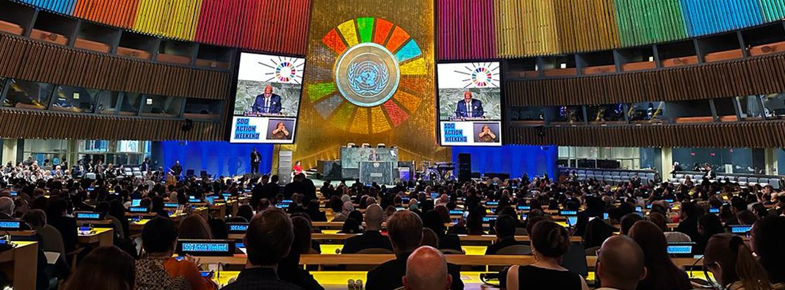
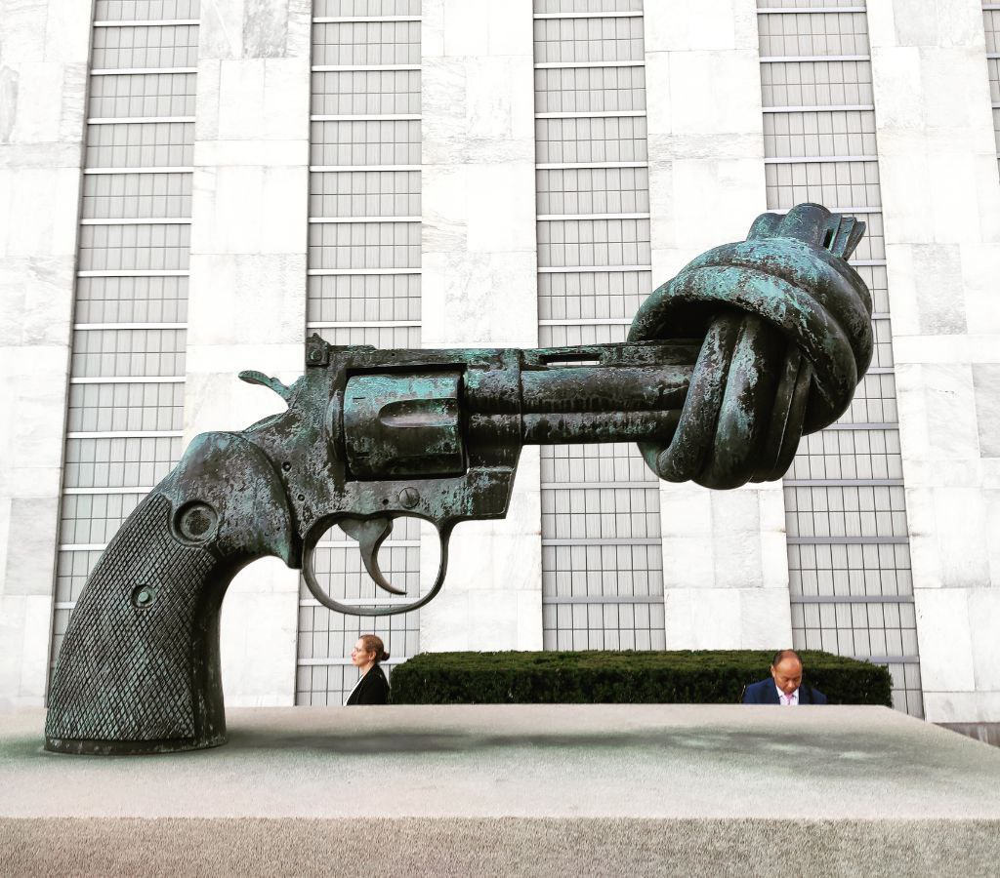
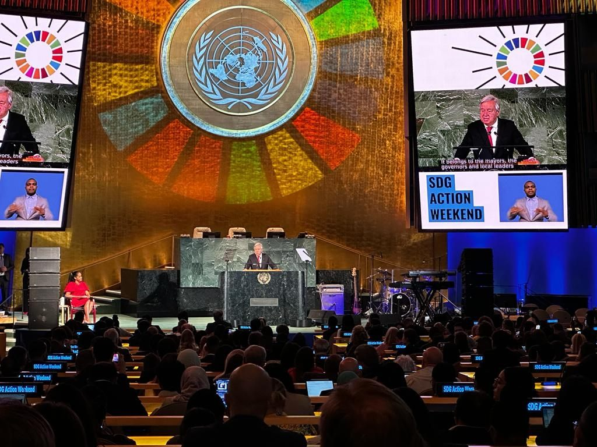
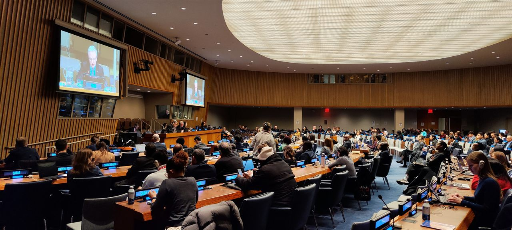
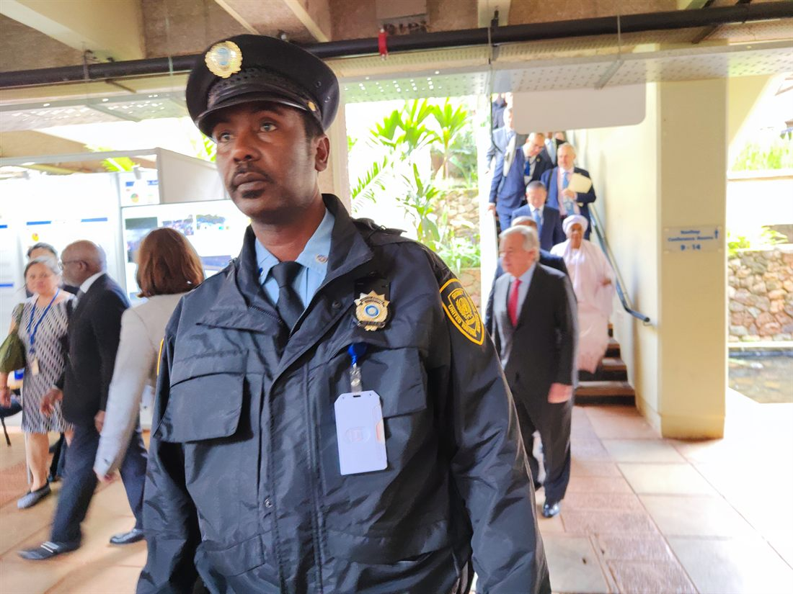
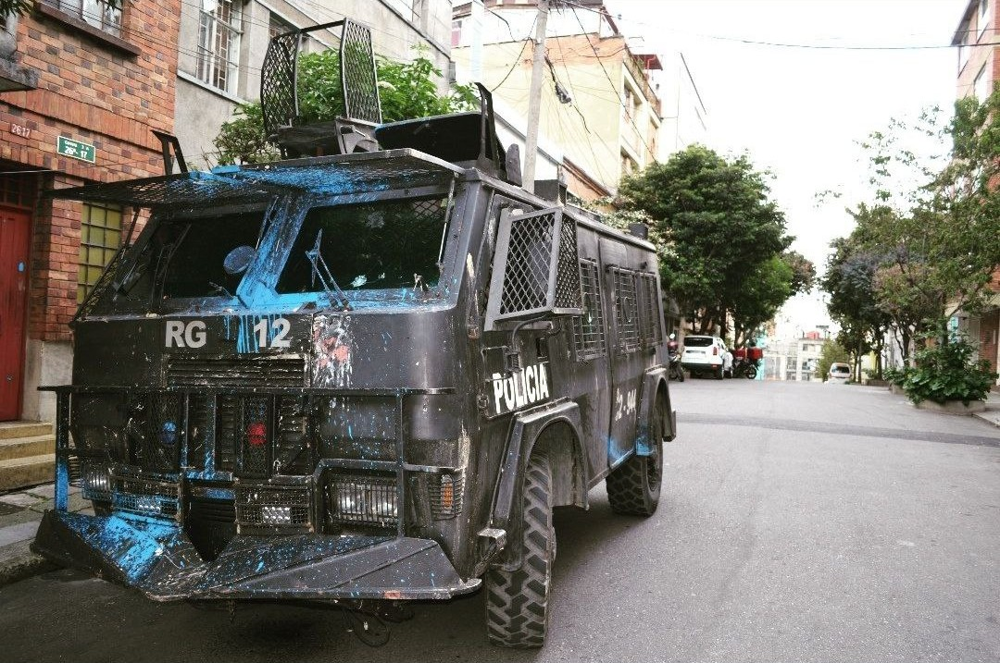

Connecting your work with the right United Nations mechanisms — the strategic entry points, the targeted interventions, and the online and in-person opportunities that carry your expertise to the people who can turn it into action.

Image: New York — UNHQ, “Summit of the Future” Action Days (2024).
Engage with Regional & Global UN Mechanisms
Finding the right entry points into the UN system — and the interventions that make your expertise count.

Image: New York — UNHQ, Peace Statue (2025).
To maximise your impact at international and regional forums on environmental and human rights issues, interventions need to be carefully planned and precisely targeted. We help partners increase visibility, drive meaningful change, and shape global norms within the United Nations system and beyond.
Our support spans three connected areas, matched to your work, your vision, and your organisational priorities:
Online advocacy
Video statements, virtual meetings, written submissions and forum interventions.
Human rights training
In-person capacity building, tailored to your context, stakeholders and risks.
Long-term programmes
Sustained engagement and programme development aligned to your goals.
Your thematic focus, geographic context, and legal status shape the most effective paths. By aligning your objectives with the right channels and audiences across the United Nations, your initiatives reach the decision-makers and influencers who can turn ideas into real-world impact.
Online advocacy is the starting point for almost any engagement with the United Nations.
Through video statements, virtual meetings, and participation in forums, your perspectives can be amplified — reaching decision-makers and global audiences, and laying the foundation for broader advocacy and lasting impact.
Online Advocacy
Meaningful participation in global decision-making — now possible from almost anywhere.

Image: New York — UNHQ, “Summit of the Future” Action Days (2024).
For civil society organisations, grassroots groups, and individual researchers, online tools have made participation far more accessible. What once required a constant physical presence at key UN locations can now be done remotely. Virtual meetings, online consultations, written submissions, and pre-recorded video statements allow targeted input without the logistical and financial barriers that previously limited access.
Common online channels
Video statementsWritten submissionsVirtual briefingsOnline questionnairesOral interventions
Many UN mechanisms actively encourage online participation. Human rights treaty bodies, Special Rapporteurs, and UN working groups regularly invite civil society to virtual briefings or to submit information through online questionnaires. These formats help deliver precise, locally grounded recommendations — and even brief, two-minute interventions can shape discussions, surface emerging issues, and bring attention to communities that are too often overlooked.
Online participation is a powerful entry point for shaping global agendas and ensuring that diverse voices are heard.
The Human Rights Council
The UN's central human rights body — where effective advocacy begins long before the Council floor.
The Human Rights Council is the principal United Nations body for promoting and protecting human rights worldwide and for addressing violations. Much of the decisive work happens well before any note, briefing, or report reaches the Council floor; by the time matters are formally presented, a great deal of the key advocacy and preparation has already taken place.
Start with the subsidiary bodies
This preparatory work happens largely within the UN's network of subsidiary bodies, thematic working groups, and special procedures. Special Rapporteurs, independent experts, and specialised consultation mechanisms gather information, invite civil society input, and produce the analyses that later inform the Council's deliberations. These spaces are often more accessible and allow highly targeted contributions, which makes them essential entry points.
Any engagement aimed at the Human Rights Council should therefore begin with its subsidiary bodies and related mechanisms. Direct advocacy before the Council can be impactful, but it is not always required: ensuring your information, recommendations, and priorities reach the experts who draft reports and shape agendas is frequently where real influence is won.
We will help you shape your impact — share your story in a 30-minute online consultation. Contact Us
How to Obtain Your UN Accreditation
ECOSOC consultative status and DGC association: the two main routes for civil society to engage the United Nations.
For a non-governmental organisation, formal accreditation is the door into the United Nations. Two principal routes exist, each opening a different kind of access, and each decided by the UN itself. Here is what they are, what they unlock, and how an organisation is accepted.
What accreditation unlocks
Accreditation gives an organisation a recognised relationship with the United Nations and a practical way to take part in its work. Depending on the route, an accredited organisation can enter UN premises in New York, Geneva, Nairobi and Vienna on accredited grounds passes; attend meetings and briefings, follow the work of UN bodies in person and online, and at times intervene in the discussion; access UN documentation, information and events, including the UN Civil Society Conference; and with consultative status, submit written and oral statements and organise official side events.
Two routes: consultative status and DGC association

Image: New York. Member-state delegations in a UN committee session (2025).
ECOSOC consultative status is the more substantive route. Granted by the UN Economic and Social Council, it lets an organisation take part directly in intergovernmental work: attending and addressing bodies such as the Human Rights Council, the Commission on the Status of Women and the High-Level Political Forum, submitting written and oral statements, and holding official side events. It comes in three categories: General, Special and Roster, and most organisations receive Special status.
Association with the UN Department of Global Communications (DGC) is the communications route. It connects an organisation to the UN’s public information work, with a listing in the UN civil society directory, participation in the weekly Civil Society Briefings at UN Headquarters and online, and grounds passes for events the Department organises in New York. DGC association does not carry the right to speak in intergovernmental meetings, but it is a recognised and valuable link to the UN, and many organisations hold it alongside, or as a step towards, consultative status.
How an organisation is accepted

Image: Nairobi (2024). UN Secretary-General António Guterres arrives at the UN Office at Nairobi. The United Nations actively encourages civil society engagement, but member states decide who gets in.
The United Nations actively encourages civil society participation, but accreditation is not automatic: each application is reviewed and decided by the UN. Consultative status is considered by the Committee on Non-Governmental Organizations, a body of member states that recommends applications to ECOSOC for approval. DGC association is decided by a Civil Society Association Committee within the Department. In both cases a clear, complete and well-prepared application is what counts, and the process can take time.
Eligibility sets the baseline. To be considered for consultative status, an organisation must normally have existed for at least two years, pursue aims that fall within ECOSOC’s areas of work, and run on a transparent, democratically adopted constitution, funded mainly by its members rather than by a government. Applications are filed online through the UN’s NGO Branch, with the organisation’s governing documents, recent financial statements, and a record of its activities attached. Because the Committee meets only twice a year, the timing of a submission shapes both how soon it is first taken up and how long the wait between rounds can be.
For consultative status, the Committee can do one of three things with an application: recommend it, reject it, or defer it by asking questions. There is no limit on how many times it can defer, so an application can move from one session to the next, answering questions and awaiting the next round, for a long time before it is finally decided.
“A rejection makes headlines; endless questions make none, but they are just as effective at blocking ECOSOC accreditation.”
Johannes Butscher, expert in civil society engagement at the UN
It is worth being clear about where those decisions sit. The UN system itself — its Secretariat, its human rights office and successive Secretaries-General — has been a consistent champion of civil society participation. But the UN is its member states, and on this committee it is governments, not the institution, that decide who passes through the door. The deferral power is what makes this possible: because the same questions can be asked again and again, with no limit, a government that would rather not see a particular organisation approved can keep it waiting indefinitely, without ever casting a visible vote against it.
Senior UN human rights officials have described the continued deferral of some applications as amounting, in effect, to a quiet refusal. The pattern shows in the numbers: in its 2026 sessions the Committee approved roughly seven in ten first-time applicants, but only about one in twenty of the applications that had already been deferred. For most organisations the real risk is not an outright “no”; it is the wait.
Advocacy that is effective, secure, and grounded in local realities.

Image: Bogotá — Police van covered in paint (2022).
Human rights are universal, indivisible, and inalienable. They are inherent to every individual, cannot be lawfully taken away, and are mutually reinforcing, with each right carrying equal weight. Effective advocacy demands a thorough understanding of the context you operate in — whether a diplomatic setting, a public demonstration, a national exchange between government and civil society, or an international forum. Each environment calls for a carefully calibrated approach, informed by local realities, the stakeholders involved, and the wider political and social landscape.
Safety is part of the strategy. Challenges and risks, including potential reprisals, are real. Strategic engagement and rigorous risk assessment help protect both individuals and organisations, and support from mechanisms such as the Office of the High Commissioner for Human Rights can provide essential safeguards.
We support advocates in designing strategies that are effective, secure, and impactful. From refining messaging to connecting you with expert advisers and activating the relevant mechanisms, we help you create meaningful change while navigating complex human rights spaces with confidence and professionalism.
Engage the Media
Turning visibility into awareness, protection, and pressure for change.
Media engagement is a powerful tool for advancing human rights. Sharing information and raising public awareness can play a vital role in protecting communities and prompting action. By reaching audiences at local, national, regional, and international levels, you can amplify your message and build support for meaningful change.
Used strategically, traditional media, social channels, and digital platforms let you spread ideas, spark informed discussion, and strengthen advocacy. Media engagement is not only about visibility — it is part of a wider approach to sharing information, influencing decision-makers, and reinforcing human rights objectives.
Drawing on our experience and understanding of local contexts, we help you craft messaging that is clear, compelling, and safe, and use media effectively to reach the right audiences, communicate your goals, and make a lasting impact.